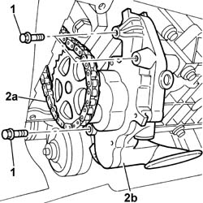

1084B12 ENGINE OIL PUMP - R+R
- Path
- Procedures > 10 ENGINE > 1084 ENGINE LUBRICATION > 1084B ENGINE OIL LUBRICATION CIRCUIT > 1084B12 ENGINE OIL PUMP - R+R
- Kind
- repair procedure (removal / refitting; the operation number is the code)
- Applies to
- engines: 2.0 16v, 2.0 16V JTD, 2.2 16V JTD; all production periods
- Interactive page
- https://sloeber94.github.io/elrnDB-fUlss/en/#/179007159
Applies to: engines: 2.0 16v; all production periods
See in Op. 1020D14
Applies to: engines: 2.0 16V JTD; all production periods
 Removing
Removing
 Refitting
RefittingOp. 4450B04 RIGHT FRONT WHEEL R R
Op. 7055B91 RIGHT FRONT WHEEL ARCH LINER - R.R.
Op. 7055B54 UNDER-ENGINE GUARD - R R
See in Op. 1020A30
See in Op. 1092G10
See in Op. 1092G20
See in Op. 1024B54
See in Op. 1020A20
See in Op. 1084B10
Applies to: engines: 2.0 16V JTD; all production periods
Refitting
RemovingSee in Op. 1084B10
See in Op. 1020A20
See in Op. 1024B54
See in Op. 1092G20
See in Op. 1092G10
See in Op. 1020A30
Op. 7055B54 UNDER-ENGINE GUARD - R R
Applies to: engines: 2.2 16V JTD; all production periods
Removing
RefittingOp. 4450B04 RIGHT FRONT WHEEL R R
Op. 7055B91 RIGHT FRONT WHEEL ARCH LINER - R.R.
Op. 7055B54 UNDER-ENGINE GUARD - R R
See in Op. 1020A30
See in Op. 1092G10
See in Op. 1092G20
See in Op. 1048B10
See in Op. 1020A20
1. Undo the bolts fixing the oil pump.
2. Release the pulley from the drive chain (2a) and remove the oil pump (2b).

Applies to: engines: 2.2 16V JTD; all production periods
Refitting
Removing- Place the oil pump in position fitting the pulley on the drive chain.
- Tighten the bolts fixing the oil pump to the balancing shaft assembly and tighten to torque.
See in Op. 1020A20
See in Op. 1048A10
See in Op. 1024B54
See in Op. 1092G20
See in Op. 1092G10
See in Op. 1020A30
Op. 7055B54 UNDER-ENGINE GUARD - R R
Topics linked from this page (4)
- 4450B04 RIGHT FRONT WHEEL R R
- 5040A24 AIR CONDITIONING COMPRESSOR - PARTIALLY R.R. FROM THE ENGINE WITHOUT DISCONNECTING THE PIPES
- 7055B54 UNDER-ENGINE GUARD - R R
- 7055B91 RIGHT FRONT WHEEL ARCH LINER - R.R.